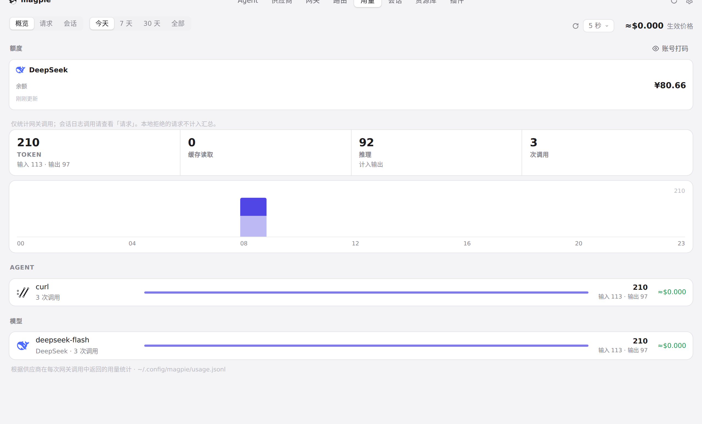
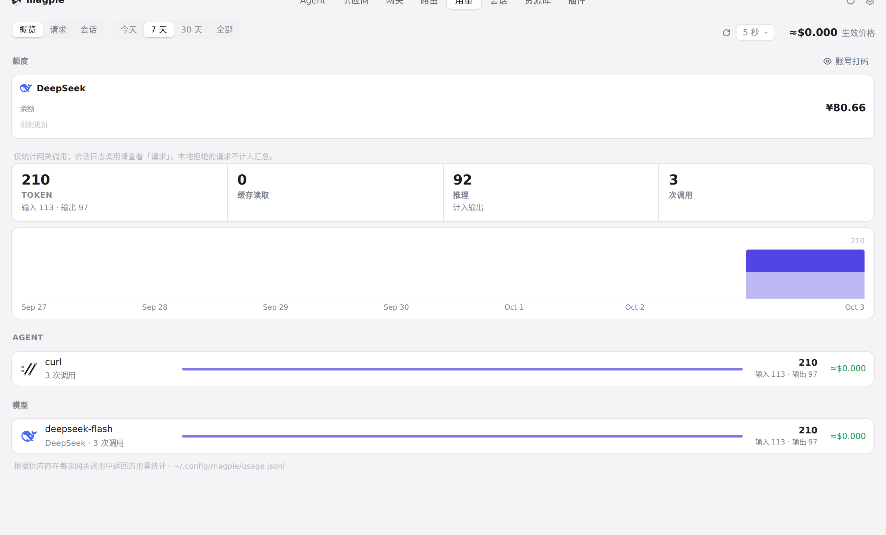
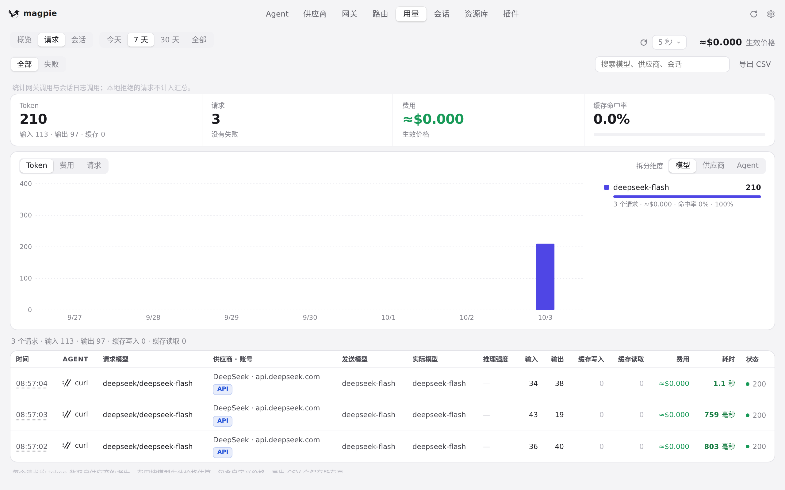
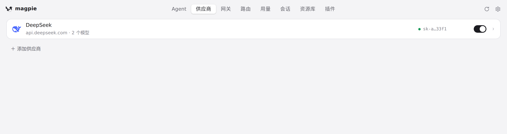

#664 界面预览
commit 9b5d5d2 · 回到 PR · app.js 里用量概览的读取改了：loadUsage 与 refreshUsage 共用一个读取序号，只有最新一次读取才写入页面，且要求页面、标签和周期都没变；另外供应商列表拉取中的轮询在读取失败或重载失败后会重新排下一次。其余改动是 internal/plugin 的 Go 代码、Makefile/CI 与测试，界面看不见。
红线是鼠标走过的轨迹，红色圆环是一次点击；底部文字是这一步在做什么。空格暂停，← → 逐段查看。

用量概览的周期与刷新读取 · 用量页概览，周期在「今天」

用量概览的周期与刷新读取 · 「7 天」这一次读取之后的概览
用量概览的周期与刷新读取 · 「立即刷新」之后的概览

用量概览的周期与刷新读取 · 「请求」标签的画面
 用量概览的周期与刷新读取 · 切回「概览」之后的用量与图表
用量概览的周期与刷新读取 · 切回「概览」之后的用量与图表

供应商列表拉取中的重复读取所在页 · 供应商页——账号列表拉取中时反复重读的就是这个页面